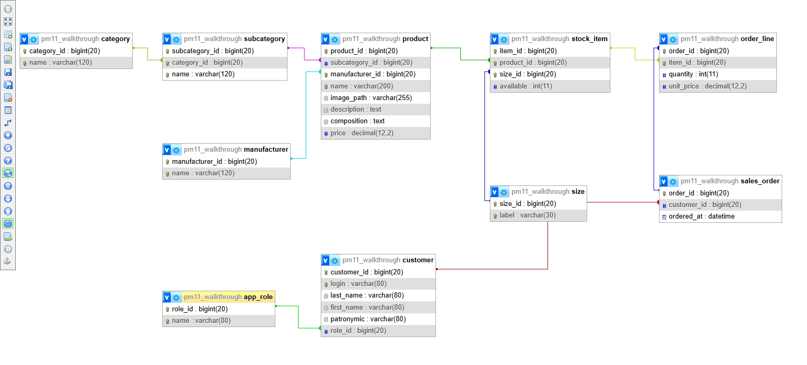
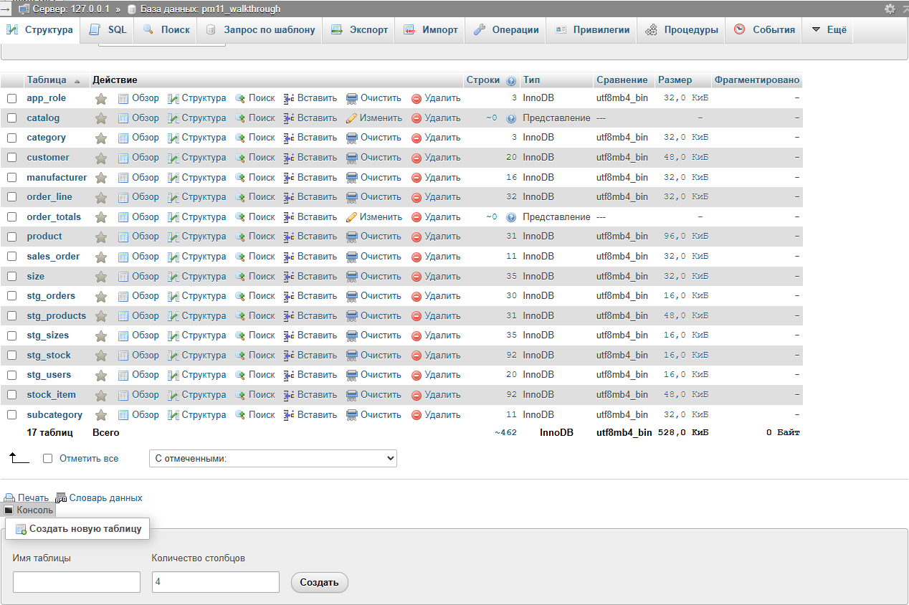
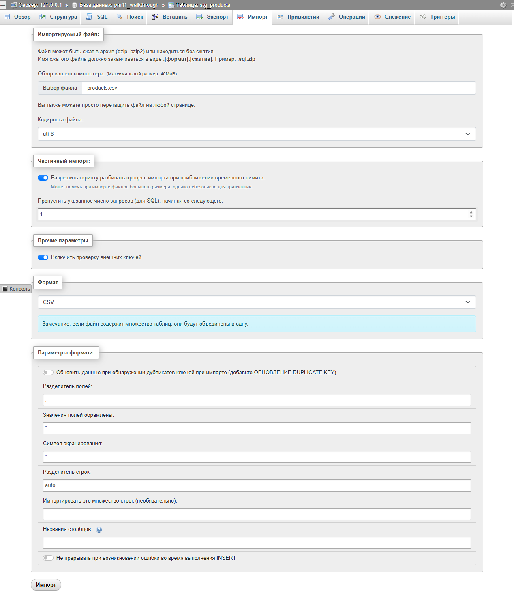
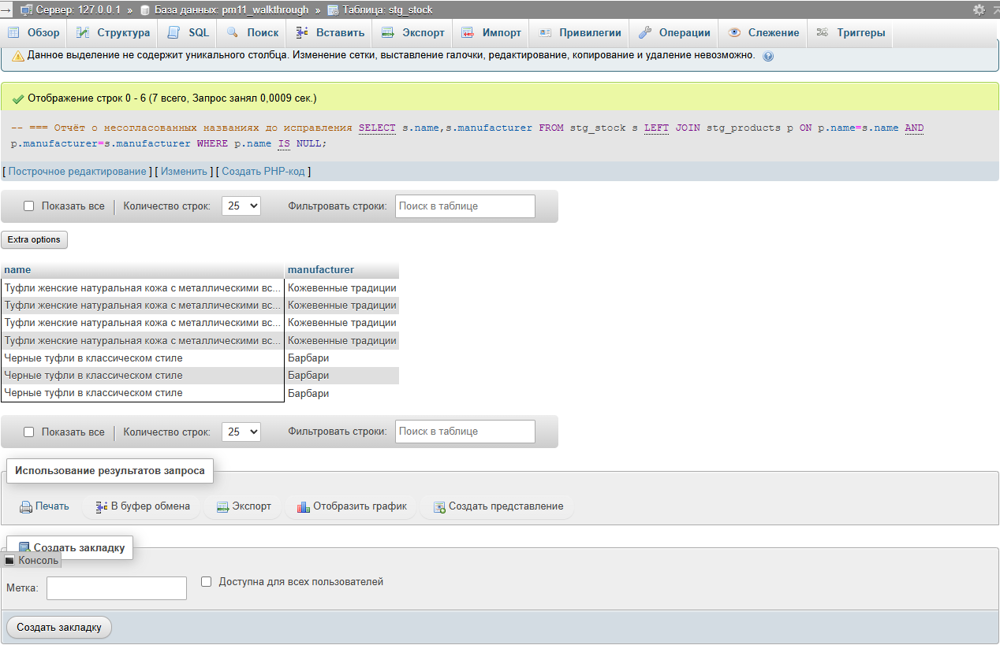
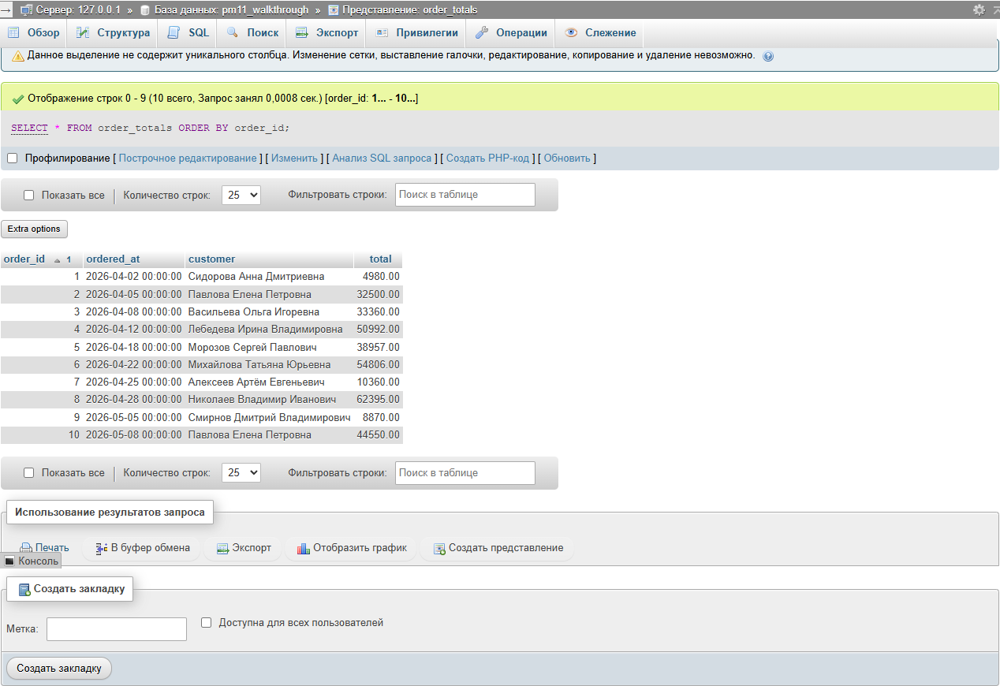

Одна собственная схема, проверяемые исходные строки и сохранённая история заказов.
ПМ.11 · Раздел 1
1. Разработать базу данных торговой организации
1
Предметная задача
Разработать нормализованную базу данных каталога моделей, размерных позиций, клиентов и истории заказов. Использовать исходные CSV назначенной предметной области. Обеспечить первичные и внешние ключи, уникальность модели с размером и логина, положительные цены и количества, неотрицательные остатки. Сохранить историческую цену каждой строки исходного заказа.
2
Обязательный результат
Определить сущности и зависимости, обосновать третью нормальную форму, создать одну собственную БД, сохранить ER-диаграмму в PDF с атрибутами, ключами и связями. Подготовить промежуточный слой, проверить исходные строки, документировать исправления и отклонения, импортировать данные без скрытой потери строк. Сверить исходные и итоговые счётчики, суммы и связи.
3
Образец и индивидуальная работа
Изучить объяснения магазина «Пара» и применить каждый приём сразу к своей области. Отдельно создавать и сдавать демонстрационную БД не требуется. Готовое демонстрационное решение использовать для сверки структуры и смысла SQL после собственной попытки. Его имена и контрольные числа не являются ответом индивидуального варианта.
ПМ.11 · Раздел 2
2. Проверить модель и полноту импорта
1
Путь исходной строки
Сопоставить имена и поля пяти исходных XLSX демонстрации с учебными CSV и таблицами назначения. Для своего набора указать файл, номер строки после заголовка и смысл поля. Хранить исходные CSV без изменений; выполнять исправления только в промежуточном слое с записью старого и нового значения.
2
Журнал и контроль
Представить журнал с полями источник, строка, код, причина, решение и при необходимости старое и новое значение. Не продолжать перенос при неустранённых отклонениях. Для контрольной проверки на отдельной копии добавить неверную связь и неверное количество, получить их в журнале и подтвердить отсутствие частичного переноса. Затем восстановить исходный набор и повторить импорт.
3
Историческая цена и ограничения
Вычислить сумму истории как SUM(quantity * unit_price). Сопоставить её с исходными строками. На проверочной копии изменить текущую цену модели и убедиться в неизменности истории. Проверить отклонение неверного внешнего ключа, отрицательного остатка и повторной пары модель–размер. Допустимые действия должны проходить, ошибочные — сохранять прежнее состояние.
ПМ.11 · Раздел 3
3. Подготовить сдачу
1
Состав проекта
Представить SQL схемы, промежуточного слоя, проверки и импорта; исходные данные; ER.pdf; словарь полей; карту источников; журнал исправлений и отклонений; контрольные счётчики и суммы; инструкцию чистого развёртывания. Из пакета должна создаваться именно собственная БД без скрытых ручных шагов.
2
Документы и доказательства
Заполнить отдельную форму отчёта DOCX фактами собственной работы. Указать группу, вариант, область и доступную проверяющему ссылку на репозиторий. Заменить пустые рамки своими снимками, сохранить подписи рисунков и пояснить результаты. Подготовить аттестационный лист, индивидуальное задание, пояснительную записку и презентацию из пакета преподавателя; рисунки отчёта и презентации имеют одинаковые подписи.
3
Граница обязательной работы
Разработка новой корзины и полного оформления заказа в эту сдачу не входит. Процедура заказа, конкурентные покупки, расширенное разграничение доступа, индексы и дополнительные модели сохранены в отдельном разделе для углубления. Их отсутствие не препятствует приёмке основной схемы и импорта.
ПМ.11 · Раздел Файлы
Файлы и первый шаг
1
Исходные материалы
В source-materials.zip находятся data/original с пятью XLSX, data/demo с CSV образца, data/variant-01 … data/variant-30 с отдельными наборами и context.json, а также карты источников и словарь. Выбрать папку назначенного варианта. Каждый отдельный набор также доступен под его карточкой.
Проверка. Скачать данные своего варианта и сохранить исходные файлы без изменений.
2
Заготовка и SQL образца
database-starter.zip содержит пустую структуру проекта и порядок работы. SQL образца 01_schema.sql — 04_queries.sql можно читать по прямым ссылкам ниже; по объяснениям подготовить собственные SQL. demo-solution.zip служит сверкой после собственной попытки. Отдельно создавать демонстрационную БД не требуется.
Проверка. Эти же ссылки работают из PDF; все 30 наборов находятся в одном исходном архиве.
4
Отчёт и документы
Пустая форма report-template.docx содержит поля и рамки для собственных рисунков. Преподаватель выдаёт её вместе с документами EatDoners. Заполнить факты своей области и ссылку на репозиторий; подписи рисунков согласованы с презентацией.
Открыть общее задание целиком, выбрать назначенную область, скачать её данные и заготовку. На каждом этапе сначала прочитать разбор магазина «Пара», затем выполнить аналогичное действие в pm11_vNN своей области. Пункты, где в образце написано pm11_demo, читать как выбранное собственное имя. Демонстрацию отдельно воспроизводить не требуется.
Проверка. Существует одна рабочая БД назначенной области; демонстрационные данные в неё не загружаются.
2
Что сохранять
Вести отдельную папку проекта: sql, data, er, docs и checks. В data сохранить исходные CSV и context.json без правок. SQL записывать в UTF-8. Фактические результаты и снимки добавлять в отчёт по завершении соответствующего действия.
Проверка. Контрольные числа берутся из context.json своего набора.
ПМ.11 · Раздел М.2
Как устроено демонстрационное решение
1
От модели к хранению
Для магазина обуви «Пара» каждая модель имеет производителя, подкатегорию, цену, состав, описание и ссылку на изображение. Размер сам по себе не определяет остаток: доступное количество относится к паре «модель + размер». Поэтому product и stock_item — разные таблицы. В category и subcategory хранится иерархия; product ссылается только на subcategory, чтобы категория не дублировалась и не могла противоречить ей.
2
Что означает третья нормальная форма
Каждая строка описывает одну сущность, неключевые поля зависят от её ключа и не определяются другими неключевыми полями внутри той же таблицы. Производитель хранится в справочнике, а не повторяется текстом в каждом товаре. Заголовок sales_order описывает клиента и дату; order_line описывает конкретную позицию, количество и цену покупки. Вычисляемая сумма не хранится отдельно. unit_price является историческим фактом строки заказа и не должна обновляться вместе с product.price.
3
Исходные данные демонстрации
Скачать CSV и изображения демонстрационного магазина обуви по прямой ссылке в начале этого раздела. Распакуйте архив; пять CSV находятся в data/demo. Они подготовлены из пяти исходных Excel-таблиц, предоставленных преподавателем. Преобразованы заголовки, дата и числа; в шести текстовых полях удалены внешние пробелы и переносы по INPUT_MAPPING.md; расхождения названий сохраняются для разбора. Архив SOURCE.md объясняет происхождение. expected.json содержит проверенные количества исходных строк, а не готовые результаты вашей работы.
ПМ.11 · Раздел М.3
Откройте XAMPP и создайте отдельную БД
1
Запуск установленной среды
Откройте XAMPP Control Panel. Нажмите Start в строках Apache и MySQL. При успешном запуске строка становится зелёной, появляются PID и порт. Не запускайте второй сервер на том же порту. Нажмите Admin в строке MySQL: откроется phpMyAdmin, обычно по адресу http://localhost/phpmyadmin/. Убедитесь на главной странице, что сервер доступен. Запишите фактические версии в отчёт. В проверенной среде XAMPP компонент MySQL использует MariaDB 10.4.32; это важно для синтаксиса ролей и процедуры.
2
Создание проекта
Скачать заготовку рабочей папки проекта по прямой ссылке в начале этого раздела. Распакуйте её. В редакторе создавайте SQL-файлы с указанными ниже именами, сохраняйте в UTF-8. В phpMyAdmin нажмите Создать слева либо вкладку Базы данных. В поле имени введите pm11_vNN своего варианта (pm11_demo — имя образца), в списке сравнения выберите utf8mb4_bin, нажмите Создать. Имя должно быть свободно. Если оно уже занято вашей предыдущей демонстрацией, выберите другое собственное имя и замените его в настройках прав. Не удаляйте чужую БД.
3
Точное выполнение SQL
Выделите свою БД слева, откройте вкладку SQL. Введите законченный фрагмент в редактор и нажмите Вперёд. Успех подтверждается сообщением phpMyAdmin и появлением объектов на вкладке Структура. Сохраните тот же текст в своём SQL-файле; не ограничивайтесь историей браузера. Если появилось сообщение ошибки, разберите имя объекта и строку; не продолжайте с отсутствующей таблицей. Команды CREATE TABLE в MySQL выполняют неявное завершение транзакции: обычный ROLLBACK не удалит созданную таблицу.
ПМ.11 · Раздел М.4
Спроектируйте связи и ER-диаграмму
1
Первичные и внешние ключи
Первичный ключ однозначно обозначает строку. AUTO_INCREMENT создаёт новые номера. Внешний ключ указывает на существующую строку другой таблицы. Для товара и размера нужен дополнительный UNIQUE: новый item_id не делает повторную пару модель-размер допустимой. RESTRICT защищает справочник или позицию, на которую ссылаются данные. CASCADE для строк заказа описывает их зависимость от заголовка; автоматическое возвращение остатков при удалении заказа этим не выполняется. В данной работе роль оформления не имеет права удалять заказ.
2
Построение диаграммы после таблиц
После выполнения 01_schema.sql откройте вкладку Структура, затем Ещё → Дизайнер. В Дизайнере должны появиться таблицы; при необходимости выберите отображение всех таблиц и расположите справочники слева, каталог по центру, заказы справа. Связи InnoDB берутся из созданных внешних ключей, поэтому рисовать линии вместо SQL-ограничений недостаточно. Укажите на диаграмме ключи и кардинальность: один товар имеет много stock_item, один заказ имеет много order_line. На левой панели Дизайнера нажмите Экспорт схемы. В окне Экспорт схемы связей выберите PDF, альбомную ориентацию и размер A4 либо A3 для крупной схемы. Не включайте Показывать только ключи: нужны все атрибуты. Снимите Словарь данных, если нужен только рисунок, и нажмите Вперёд. Экспортируйте предметную схему до создания stg_таблиц и представлений: PDF-экспорт может включить их даже после скрытия на экране. Если они уже созданы, выберите при экспорте только десять предметных таблиц. Перетаскивайте таблицы за название так, чтобы они не перекрывались. Проверьте читаемость всех таблиц и ключей перед сохранением.
3
Проверка модели
Откройте product → Структура → Связи и убедитесь, что ссылки ведут на subcategory и manufacturer. Аналогично проверьте stock_item и order_line. Все таблицы должны иметь движок InnoDB. Сравните диаграмму с исходными сущностями; отсутствие user_password соответствует исходному описанию клиентов, а безопасность доступа к СУБД будет реализована отдельными учётными записями.
ПМ.11 · Раздел М.5
Справочники · 01_schema.sql
1
Файл, место и смысл изменения
Создайте 01_schema.sql. Введите этот фрагмент первым и выполните во вкладке SQL выбранной БД. category обозначает крупную группу, subcategory — её вид; уникальность пары category_id/name разрешает одинаковое имя подкатегории в разных категориях. RESTRICT не даёт удалить категорию, пока на неё ссылается подкатегория. size хранит текстовый размер: в разных областях встречаются числовые размеры, S/M/L и универсальные маркировки. Проверьте четыре таблицы на вкладке Структура; в каждой есть первичный ключ.
2.1
Добавьте строки 1–20 в 01_schema.sql
-- === Справочники и третья нормальная форма
CREATE TABLE category (
category_id BIGINT PRIMARY KEY AUTO_INCREMENT,
name VARCHAR(120) NOT NULL UNIQUE CHECK (TRIM(name)<>'')
) ENGINE=InnoDB;
CREATE TABLE subcategory (
subcategory_id BIGINT PRIMARY KEY AUTO_INCREMENT,
category_id BIGINT NOT NULL,
name VARCHAR(120) NOT NULL,
UNIQUE(category_id,name),
FOREIGN KEY(category_id) REFERENCES category(category_id) ON DELETE RESTRICT
) ENGINE=InnoDB;
CREATE TABLE manufacturer (
manufacturer_id BIGINT PRIMARY KEY AUTO_INCREMENT,
2.2
Добавьте строки 1–20 в 01_schema.sql · продолжение
name VARCHAR(120) NOT NULL UNIQUE
) ENGINE=InnoDB;
CREATE TABLE size (
size_id BIGINT PRIMARY KEY AUTO_INCREMENT,
label VARCHAR(30) NOT NULL UNIQUE
) ENGINE=InnoDB;
ПМ.11 · Раздел М.6
Модели и остатки · 01_schema.sql
1
Файл, место и смысл изменения
Добавьте фрагмент в конец 01_schema.sql и выполните только новые CREATE TABLE. product хранит свойства модели, а stock_item — остаток по размеру. DECIMAL хранит денежные значения точно; FLOAT для цены не используется. Ограничение available>=0 действует независимо от клиента, UNIQUE(product_id,size_id) не позволяет повторную позицию. image_path — имя исходного изображения: файлы находятся в Images рядом с демонстрационными CSV; поле является ссылкой на файл, а не бинарным содержимым картинки. В структуре stock_item откройте Связи и проверьте оба внешних ключа.
2.1
Добавьте строки 21–43 в 01_schema.sql
) ENGINE=InnoDB;
-- === Товар и сочетание модели с размером
CREATE TABLE product (
product_id BIGINT PRIMARY KEY AUTO_INCREMENT,
subcategory_id BIGINT NOT NULL,
manufacturer_id BIGINT NOT NULL,
name VARCHAR(200) NOT NULL,
image_path VARCHAR(255) NOT NULL DEFAULT '',
description TEXT NOT NULL,
composition TEXT NOT NULL,
price DECIMAL(12,2) NOT NULL CHECK(price>0),
UNIQUE(name,manufacturer_id),
FOREIGN KEY(subcategory_id) REFERENCES subcategory(subcategory_id) ON DELETE RESTRICT,
FOREIGN KEY(manufacturer_id) REFERENCES manufacturer(manufacturer_id) ON DELETE RESTRICT
2.2
Добавьте строки 21–43 в 01_schema.sql · продолжение
) ENGINE=InnoDB;
CREATE TABLE stock_item (
item_id BIGINT PRIMARY KEY AUTO_INCREMENT,
product_id BIGINT NOT NULL,
size_id BIGINT NOT NULL,
available INT NOT NULL CHECK(available>=0),
UNIQUE(product_id,size_id),
FOREIGN KEY(product_id) REFERENCES product(product_id) ON DELETE RESTRICT,
FOREIGN KEY(size_id) REFERENCES size(size_id) ON DELETE RESTRICT
) ENGINE=InnoDB;
ПМ.11 · Раздел М.7
Клиенты и история · 01_schema.sql
1
Файл, место и смысл изменения
Добавьте заключительный фрагмент в тот же файл и выполните. app_role описывает роли клиентов исходной предметной области; эти записи не дают прав подключения к серверу. sales_order содержит клиента и дату. order_line имеет составной первичный ключ: одна позиция присутствует в заказе один раз с суммарным количеством. unit_price фиксирует цену покупки. Откройте Структура и проверьте десять предметных таблиц. Затем постройте ER-диаграмму описанным выше способом.
2.1
Добавьте строки 44–72 в 01_schema.sql
) ENGINE=InnoDB;
-- === Клиент, заголовок заказа и исторические строки
CREATE TABLE app_role (
role_id BIGINT PRIMARY KEY AUTO_INCREMENT,
name VARCHAR(80) NOT NULL UNIQUE
) ENGINE=InnoDB;
CREATE TABLE customer (
customer_id BIGINT PRIMARY KEY AUTO_INCREMENT,
login VARCHAR(80) NOT NULL UNIQUE,
last_name VARCHAR(80) NOT NULL,
first_name VARCHAR(80) NOT NULL,
patronymic VARCHAR(80) NOT NULL DEFAULT '',
role_id BIGINT NOT NULL,
FOREIGN KEY(role_id) REFERENCES app_role(role_id) ON DELETE RESTRICT
2.2
Добавьте строки 44–72 в 01_schema.sql · продолжение
) ENGINE=InnoDB;
CREATE TABLE sales_order (
order_id BIGINT PRIMARY KEY AUTO_INCREMENT,
customer_id BIGINT NOT NULL,
ordered_at DATETIME NOT NULL DEFAULT CURRENT_TIMESTAMP,
FOREIGN KEY(customer_id) REFERENCES customer(customer_id) ON DELETE RESTRICT
) ENGINE=InnoDB;
CREATE TABLE order_line (
order_id BIGINT NOT NULL,
item_id BIGINT NOT NULL,
quantity INT NOT NULL CHECK(quantity>0),
unit_price DECIMAL(12,2) NOT NULL CHECK(unit_price>0),
PRIMARY KEY(order_id,item_id),
FOREIGN KEY(order_id) REFERENCES sales_order(order_id) ON DELETE CASCADE,
2.3
Добавьте строки 44–72 в 01_schema.sql · продолжение
FOREIGN KEY(item_id) REFERENCES stock_item(item_id) ON DELETE RESTRICT
) ENGINE=InnoDB;
ПМ.11 · Раздел М.8
ER-диаграмма реальной демонстрационной БД

Связи таблиц в Дизайнере phpMyAdmin
Реальный снимок схемы: десять предметных таблиц, их поля и внешние связи. Таблицы расположены средствами Дизайнера; изображения SQL-результатов не моделировались.
ПМ.11 · Раздел М.9
Структура БД в phpMyAdmin

Структура БД в phpMyAdmin
Реальные предметные таблицы, промежуточный слой и представления в учебной БД.
ПМ.11 · Раздел М.10
От исходных XLSX к учебным CSV
1
Файлы и преобразования
Открыть INPUT_MAPPING.md из архива исходных материалов. В нём для каждого XLSX указаны лист, русские заголовки, английские поля CSV, промежуточная и предметная таблицы. Исходные XLSX находятся в data/original; подготовленные файлы образца — в data/demo. Порядок строк сохранён: строка 2 XLSX соответствует первой строке данных CSV.
Проверка. У демонстрации 31 модель, 35 маркировок, 92 остатка, 20 клиентов и 30 строк десяти заказов.
2
Проверка преобразования
Дату привести к YYYY-MM-DD HH:MM:SS, число — к десятичной точке, файл сохранить в UTF-8 с запятой и двойными кавычками. Заголовок идёт первым. Номера размеров оставить строками: встречаются цифровые и буквенные маркировки. Для индивидуальной работы преобразование уже выполнено в предоставленных CSV; выполнять дополнительный импорт XLSX в свою БД не требуется.
Проверка. Выборочно сопоставлены значения, количества строк и сумма quantity * unit_price. Историческая цена берётся из Orders_import.xlsx, а не из текущего прайс-листа.
ПМ.11 · Раздел М.11
Создать промежуточный слой и журнал
1
Сырой слой
Открыть свою БД → SQL. Прочитать и выполнить 02_staging.sql целиком один раз. Исходные значения хранятся как TEXT до проверки. source_file задаёт имя CSV, source_row автоматически нумерует данные с 2, учитывая заголовок. import_issue хранит координаты проблем, объяснение и принятое решение.
Проверка. На вкладке Структура появились пять stg_таблиц и import_issue.
2.1
Промежуточные таблицы и координаты строк
-- При импорте CSV явно указать только исходные поля без source_file и source_row.
CREATE TABLE stg_products (
category TEXT,subcategory TEXT,image_path TEXT,name TEXT,manufacturer TEXT,description TEXT,composition TEXT,price TEXT,
source_file VARCHAR(80) NOT NULL DEFAULT 'products.csv',
source_row BIGINT UNSIGNED NOT NULL AUTO_INCREMENT PRIMARY KEY
) ENGINE=InnoDB AUTO_INCREMENT=2;
CREATE TABLE stg_sizes (
label TEXT,
source_file VARCHAR(80) NOT NULL DEFAULT 'sizes.csv',
source_row BIGINT UNSIGNED NOT NULL AUTO_INCREMENT PRIMARY KEY
) ENGINE=InnoDB AUTO_INCREMENT=2;
CREATE TABLE stg_stock (
name TEXT,manufacturer TEXT,size TEXT,available TEXT,
source_file VARCHAR(80) NOT NULL DEFAULT 'stock.csv',
2.2
Промежуточные таблицы и координаты строк · продолжение
Промежуточные таблицы и координаты строк · продолжение
issue_code VARCHAR(40) NOT NULL, reason TEXT NOT NULL,
disposition VARCHAR(20) NOT NULL DEFAULT 'отклонено',
old_value TEXT NULL, new_value TEXT NULL,
PRIMARY KEY(source_file,source_row,issue_code)
) ENGINE=InnoDB;
SELECT s.source_file,s.source_row,s.name,s.manufacturer
FROM stg_stock s LEFT JOIN stg_products p
ON p.name=s.name AND p.manufacturer=s.manufacturer WHERE p.name IS NULL;
ПМ.11 · Раздел М.12
Импортировать только файлы своего варианта
1
Выбрать таблицу и файл
В phpMyAdmin выделить stg_products → Импорт → выбрать products.csv своего варианта. Формат CSV, кодировка UTF-8, разделитель запятая, ограничитель и экранирование двойная кавычка. Пропустить одну строку заголовка. В списке столбцов явно указать category,subcategory,image_path,name,manufacturer,description,composition,price. Поля source_file и source_row в этот список не включать: их заполнит СУБД.
2
Остальные файлы
Повторить загрузку: sizes.csv → stg_sizes, список label; stock.csv → stg_stock, список name,manufacturer,size,available; users.csv → stg_users, список last_name,first_name,patronymic,login,role; orders.csv → stg_orders, список order_id,ordered_at,full_name,category,name,manufacturer,size,quantity,unit_price. Перед каждым импортом проверить имя выбранной БД и таблицы.
Проверка. SELECT COUNT(*) и MIN(source_row) подтверждают количества из context.json и начало нумерации с 2.
3
Повторная загрузка
Не добавлять второй экземпляр тех же CSV в заполненный слой. Для своей таблицы выполнить TRUNCATE TABLE stg_products; ALTER TABLE stg_products AUTO_INCREMENT=2; и заново импортировать products.csv. Аналогично очищать только нужную собственную stg_таблицу. Предметные таблицы этим не очищаются; повтор полного переноса выполняется в новой проверочной копии.

Настройки CSV в phpMyAdmin
Снимок демонстрирует формат CSV. В текущей работе дополнительно задаётся явный список столбцов без source_file и source_row.
ПМ.11 · Раздел М.13
Найти и объяснить несовпадающие названия
1
Причина несвязывания
Вставьте запрос в конец 02_staging.sql, а выполните после импорта пяти CSV. LEFT JOIN оставляет строки остатков, даже когда подходящий товар не найден; WHERE p.name IS NULL выделяет именно такие строки. В исходной демонстрации ожидаются семь строк: четыре размера модели с неразрывным пробелом и три размера модели со сокращённым названием. Сохраните результат и сравните название и производителя с stg_products. Нельзя просто удалить эти строки или отключить внешние ключи: так потеряется доступный ассортимент.

Причина неполного связывания
Реальные строки остатков, для которых до исправления не находился товар исходного каталога.
Диагностика несовпадающих названий образца
В образце видны исходные строки, не нашедшие модель. Для своего набора сохранить собственный результат диагностики.
2
Сохранить решение
В 03_import.sql два подтверждённых исправления магазина «Пара» выделены отдельно. Перед изменением создаётся запись import_issue со старым и новым названием и решением «исправлено». В другом варианте эти имена не заменять: сначала доказать причину на исходной строке. Непонятное несоответствие оставить отклонённым до согласования.
Проверка. Исходные файлы сохранены; исправление можно проследить до строки.
ПМ.11 · Раздел М.14
Проверить вход и выполнить защищённый перенос
1
Полный файл
Открыть свою БД → SQL и выполнить 03_import.sql целиком. Он создаёт готовый технический помощник import_checked, собирает отклонения до переноса и при их наличии останавливается с ошибкой. Самостоятельная разработка хранимой процедуры здесь не требуется: изучаются проверки, связи и INSERT SELECT. Если данные приняты, предметные вставки выполняются одной транзакцией с откатом при ошибке.
Проверка. При отклонении предметные таблицы остаются пустыми; список причин доступен в import_issue.
2
Разобрать отклонения
Выполнить SELECT source_file,source_row,issue_code,reason,disposition FROM import_issue ORDER BY source_file,source_row,issue_code;. Открыть указанный CSV в редакторе и найти строку. Записать решение, при подтверждённом исправлении сохранить старое и новое значение и обновить только соответствующую stg_строку. Повторить CALL import_checked();. Успешный импорт в заполненные предметные таблицы повторно не запускать.
3
Путь исходных значений
Категория и подкатегория преобразуются в ссылки справочников; модель и производитель дают product; модель и маркировка дают stock_item. ФИО исходного заказа сопоставляется ровно с одним клиентом. Несколько строк одного заказа создают один заголовок и отдельные строки order_line. Цена каждой строки берётся из stg_orders.unit_price.
Проверка. Каждая исходная строка принята либо имеет координаты и объяснение; INNER JOIN не скрывает потери.
ПМ.11 · Раздел М.15
Сверить счётчики и исторические суммы
1
Контроль своего набора
Выполнить 04_queries.sql. Получить числа моделей, маркировок, размерных позиций, клиентов, заказов и строк; сумму остатков и сумму истории. Сравнить с context.json. У всех индивидуальных исходных наборов 5 моделей, 2 маркировки, 10 позиций, 2 клиента, 1 заказ и 1 строка; историческая сумма различается и берётся из своего файла.
Проверка. В отчёте сопоставлены источник и БД; значения образца не подставлены вместо собственных.
2
Проверка образца
В SQL выполните SELECT COUNT(*) FROM product; затем аналогичные запросы к size, stock_item, customer, sales_order и order_line. До новых заказов ожидаются 31, 35, 92, 20, 10 и 30 соответственно. SELECT SUM(available) FROM stock_item; должен дать 1274. После создания представления выполните SELECT SUM(total) FROM order_totals; — 341770.00. Контрольные значения получены из исходных файлов, поэтому подтверждают полноту переноса, а не только возможность SELECT.
3.1
Представления и контрольные запросы
-- === Представление каталога
CREATE VIEW catalog AS
SELECT i.item_id,p.name,c.name AS category,sc.name AS subcategory,
m.name AS manufacturer,z.label AS size,i.available,p.price,p.image_path
FROM stock_item i JOIN product p USING(product_id)
JOIN subcategory sc USING(subcategory_id) JOIN category c USING(category_id)
JOIN manufacturer m USING(manufacturer_id) JOIN size z USING(size_id);
SELECT * FROM catalog ORDER BY name,size;
-- === Итоги из исторической цены
CREATE VIEW order_totals AS
SELECT o.order_id,o.ordered_at,
CONCAT_WS(' ',c.last_name,c.first_name,NULLIF(c.patronymic,'')) AS customer,
CAST(SUM(l.quantity*l.unit_price) AS DECIMAL(14,2)) AS total
FROM sales_order o JOIN customer c USING(customer_id)
3.2
Представления и контрольные запросы · продолжение
JOIN order_line l USING(order_id)
GROUP BY o.order_id,o.ordered_at,c.customer_id,c.last_name,c.first_name,c.patronymic;
SELECT * FROM order_totals ORDER BY order_id;
-- === Состав заказа и контроль связей
SELECT l.order_id,k.name,k.manufacturer,k.size,l.quantity,l.unit_price,
l.quantity*l.unit_price AS line_total
FROM order_line l JOIN catalog k USING(item_id) ORDER BY l.order_id,k.name;
SELECT COUNT(*) AS broken_links FROM order_line l
LEFT JOIN sales_order o USING(order_id) LEFT JOIN stock_item s USING(item_id)
WHERE o.order_id IS NULL OR s.item_id IS NULL;
-- Контрольные счётчики до новых операций
SELECT 'product' AS object_name,COUNT(*) AS rows_count FROM product
UNION ALL SELECT 'size' AS object_name,COUNT(*) AS rows_count FROM size
3.3
Представления и контрольные запросы · продолжение
UNION ALL SELECT 'stock_item' AS object_name,COUNT(*) AS rows_count FROM stock_item
UNION ALL SELECT 'customer' AS object_name,COUNT(*) AS rows_count FROM customer
UNION ALL SELECT 'sales_order' AS object_name,COUNT(*) AS rows_count FROM sales_order
UNION ALL SELECT 'order_line' AS object_name,COUNT(*) AS rows_count FROM order_line;
SELECT SUM(available) AS available_total FROM stock_item;
SELECT SUM(total) AS historical_total FROM order_totals;

Исторические итоги демонстрационного набора
Контрольный итог образца — 341770.00. В отчёт индивидуального варианта вставляется собственный результат.
ПМ.11 · Раздел М.16
Проверить журнал на контролируемых ошибках
1
Проверочная копия
Создать отдельную пустую БД pm11_check_vNN. Выполнить в ней только 01_schema.sql и 02_staging.sql, загрузить собственные CSV. Рабочую принятую БД не изменять. В stg_stock первой строки временно задать неизвестное название модели; в stg_orders первой строки задать quantity=0. Записать исходные значения до изменения.
2
Ошибка и восстановление
Выполнить 03_import.sql. Ожидается отказ, в журнале — координаты неверной связи и количества, а предметные счётчики равны нулю. Сохранить снимок и до исправления экспортировать результат журнала в checks/rejections-before.csv через Экспорт результата. Вернуть записанные исходные значения только в stg_таблицах, повторить CALL import_checked(); и проверить успешный перенос. Текущий журнал пересчитывается при повторе, поэтому ранее сохранённый CSV сохранить вместе с доказательством исправления.
Проверка. Показаны два разных отклонения, отсутствие частичного переноса и успешное продолжение после исправления.
3
Точные изменения проверочной копии и просмотр журнала
SELECT source_row,name FROM stg_stock WHERE source_row=2;
SELECT source_row,quantity FROM stg_orders WHERE source_row=2;
UPDATE stg_stock SET name='Несуществующая модель' WHERE source_row=2;
UPDATE stg_orders SET quantity='0' WHERE source_row=2;
-- Выполнить 03_import.sql целиком. Ожидается отказ.
SELECT source_file,source_row,issue_code,reason FROM import_issue
WHERE disposition='отклонено' ORDER BY source_file,source_row;
SELECT COUNT(*) FROM product;
-- Ожидаются stock_link и quantity_price, счётчик 0.
-- Вернуть записанные исходные name и quantity в stg_строки.
CALL import_checked();
ПМ.11 · Раздел М.17
Проверить историческую цену и ограничения
1
Сохранение факта покупки
На проверочной копии выбрать строку заказа, записать quantity, unit_price и итог. В одном SQL-блоке открыть START TRANSACTION; изменить product.price связанной модели; повторить SELECT к order_line и order_totals; завершить ROLLBACK;. Текущий прайс меняется внутри проверки, цена покупки и сумма истории сохраняются.
Проверка. В отчёте есть значения до и после; итог равен сумме quantity * unit_price.
2
Ограничения
Отдельными запросами на копии попытаться вставить повторную пару product_id,size_id в stock_item, отрицательный available и несуществующий внешний ключ. Перед каждым опытом записать счётчики; после ошибки проверить отсутствие новой строки. Для допустимого положительного остатка выполнить UPDATE внутри START TRANSACTION и завершить ROLLBACK. Не отключать FOREIGN_KEY_CHECKS и не удалять рабочую БД.
3
Единый блок проверки исторической цены
START TRANSACTION;
SELECT SUM(quantity*unit_price) AS before_total FROM order_line;
UPDATE product SET price=price+17 WHERE product_id=
(SELECT product_id FROM stock_item WHERE item_id=
(SELECT item_id FROM order_line LIMIT 1));
SELECT SUM(quantity*unit_price) AS after_total FROM order_line;
SELECT order_id,item_id,quantity,unit_price FROM order_line;
ROLLBACK;
-- before_total и after_total должны совпасть с суммой своего набора.
ПМ.11 · Раздел М.18
Собрать пакет и заполнить отчёт
1
Чистое развёртывание
Создать свободную БД и пройти HANDOFF.md из собственного пакета. Запустить схему, промежуточный слой, загрузку пяти CSV, проверку и импорт, контрольные запросы. Сверить числа с checks/control.json. Пакет не должен зависеть от локальных абсолютных путей и данных магазина «Пара».
Проверка. ER.pdf, словарь полей, карта источников и журнал относятся к одной принятой схеме.
2
Форма Word и рисунки
Открыть report-template.docx. Заполнить поля и пояснения своей области. Для каждого места для рисунка вставить собственный снимок, удалить текст-заглушку и сохранить подпись «Рисунок N — …». Указать ссылку на репозиторий в начале отчёта. Те же подписи используются в презентации EatDoners; рисунки добавляются к соответствующим местам.
3
Проверка сдачи
Открыть репозиторий по ссылке из отчёта с правами проверяющего; проверить доступность данных и инструкции. Передать проект, отчёт DOCX и требуемые преподавателем документы. Операция заказа и дополнительные модели не входят в приёмку этого обязательного пакета.